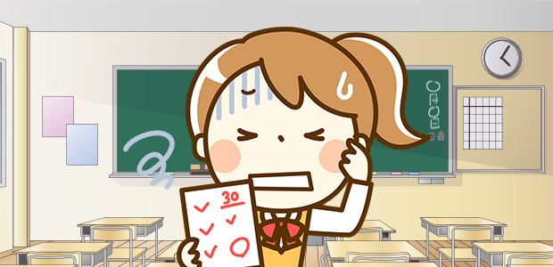

高校のテストって…
今回は高校生の女の子から、こんな質問がきました。
高校の数学が難しくって、もう苦痛です。私は文系に進むつもりなのですが、運悪く毎年担任が理系の先生なので、点数が悪いと何だかバツが悪くて…。今度のテストではかなり赤点のピンチなんですが、どうしたらいいでしょうか？
そうですか。なかなか大変なようです。
で、結論ですが、
「赤点でも別に構わない」
と言っておきます。
そんな、ひどいよ～（泣）って思うかもしれませんが、最大限に努力してダメなら仕方ないですよ。
でも背に腹は代えられないというなら、先生に出題のポイントを訊いたり、どの問題集やプリントを中心に頑張ればよいか質問するぐらいの行動はするべきでしょうね。
で、そこまでやって赤点なら、もう胸を張ってガッツポーズしましょう（笑）。
高校の理系科目って、急にレベルアップしますよね。
だからこそ本当はオモシロイのに、このテストというやつがあることで純粋に楽しめない気持ちもわかります。
かくいう私が高校時代にそうでした。
中学では自分では数学が好きでしたし、得意だという自負もありました。
ところが高校になってから、あまり数学が好きではなくなってしまったのです。
理由は「図形をほとんど扱わないから」というもの。
高校数学は代数分野の掘り下げが主で、図形の性質自体は軽くしかやらないのです（正確には、その代数で培った知識を図形に応用する場面は多いのですが）。
図形が少ないから面白くない…というのが自分なりの言い訳でしたが、詰まるところ本格的になってきた数学の理論に面倒な気持ちになっていたのが実情でした。
それに加えてテストも難しくできています。
高校の数学や物理は、平均点が５０点を切るというようなことが珍しくありません。
テスト勉強嫌いの私は、考えるよりも覚えることを選択しました。
このときもう少し、本質的な勉強に目覚めていたら、もっと早く高校数学の面白さに気付けたのになあ、と思います。
何が言いたいのかというと、質問者さんには本質的な学び方をしてほしいということです。
テストで点をとるために、付け焼刃で頭に情報を詰め込むことはよくやることだし、無下に否定はしません。
ただし、理系科目においては、それは本来の教科の面白さを消し去り、さらには学び方それ自体も非効率的だということはわかってほしい。
よく、職場の人に数学の話をすると、「そういうことだったんですね！面白いなあ」と言ってくれる場合が多いのですが、それは点数や成績といったしがらみから解放されて、素直な気持ちで考えてくれたからこそ、根底にある面白さに気づくのだと思います。
学生時代に肩の力を抜いてその境地にたどり着けばベストですが、出だしで転んでしまって諦めているのが、質問者さんのパターンだと思います。
別に困らないから
実際にテストがあるからといって、安易な詰め込み勉強をしてばかりいると、その教科の面白さには気づきません。
だから疑問を純粋に調べたり質問しながら感動し、納得していくような勉強をして下さい。
成績の方は赤点になったところで、皆が思っているほど大したことにはなりません。
指定校推薦などがとりにくくなるだけで、多くの人が通る実力勝負の大学入試には影響ありません（あ、でもあまりに不真面目にしすぎると留年の可能性が…）。
つまり多くの人が実態のないものに対して恐怖心を抱き、意味のないテスト対策などで無益な時間を消耗しているのです。
特に文系学部に進もうというなら、むしろ文系志望だからこそ一般教養だと思って理系教科を楽しんでみてはどうでしょうか。
たとえ成績が悪かろうが困らないのですから、その方が何倍も人生に有益です。
もし、「そうは言っても…」という言葉が出てくるなら、それはやはり実態のない不利益という呪縛につきまとわれているのでしょう（笑）。
仕事なら結果で白黒つけられることがあっても、勉強については努力の過程も大きく評価してくれます。ひたむきにやれば大丈夫だよと、質問者さんには言いたいですね。
仮に自分の入れた学校で、一生懸命にやるべきことをやった結果、もし留年という不利益をこうむったとしたら、これはこれでタフな人生になりますよ。そしたら数学にアバヨ！と言ってやりましょう（笑）。